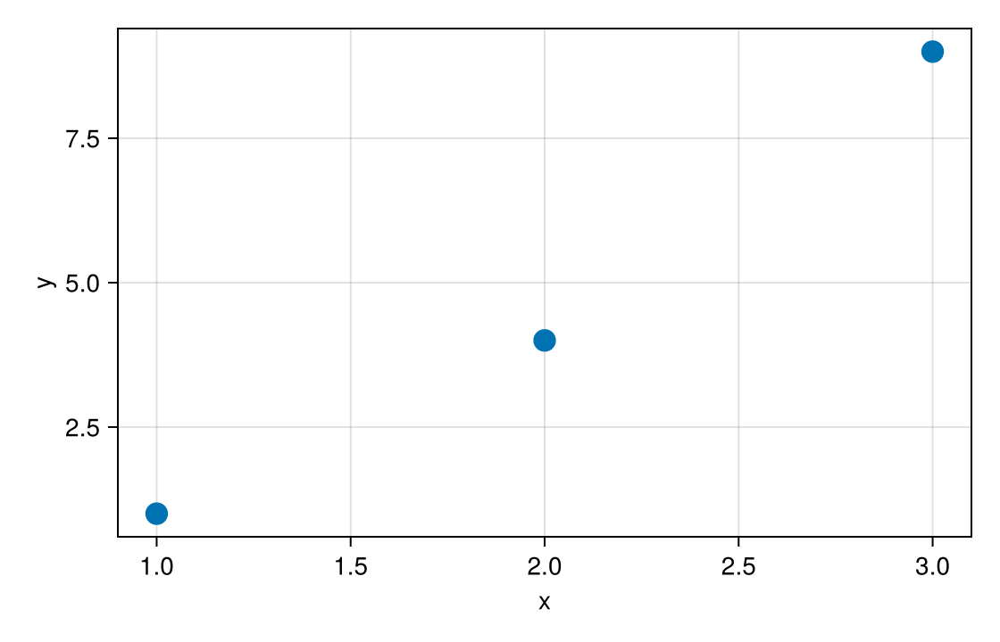

Getting started
Masque makes a Makie figure in a Pluto notebook respond to the pointer: hover a mark to see its data, click it to hand that mark to the rest of your notebook. This page installs Masque, overlays a figure with one call, and then attaches your own data to the marks.
Install
In a Pluto notebook, paste each snippet from these docs into its own cell. Pluto runs one top-level expression per cell. Wrap multiple statements in begin ... end, which counts as one expression.
Paste this cell into the notebook. Pluto's package manager stays on:
begin
using Pkg
Pkg.add(url = "https://github.com/jowch/Masque.jl")
Pkg.add("CairoMakie")
using Masque, CairoMakie
endTo install from a Julia session instead, keep the notebook file closed and write the packages into that file. Pluto.activate_notebook_environment updates the environment embedded in the notebook, so package management stays on when you open it again. Pkg.activate(; temp = true) turns package management off.
import Pluto, Pkg
Pluto.activate_notebook_environment("path/to/notebook.jl") do
Pkg.add(url = "https://github.com/jowch/Masque.jl")
Pkg.add("CairoMakie")
endMasque supports CairoMakie and WGLMakie. using Masque with no Makie backend raises ArgumentError the first time masque runs. If both CairoMakie and WGLMakie are loaded, masque defaults to CairoMakie. For more information, see Backends.
Overlay a figure
Draw the figure the way you normally would. End the cell with nothing so Pluto does not also print the plain figure:
begin
xs = [1.0, 2.0, 3.0, 4.0]
ys = [2.0, 1.0, 4.0, 3.0]
fig = Figure(size = (560, 360))
ax = Axis(fig[1, 1])
scatter!(ax, xs, ys; markersize = 16)
nothing
endThen hand the figure to masque and bind the result:
@bind pick masque(fig)Hover a point and a tooltip lists its index, x, and y. Hovering never re-runs Julia; it only happens on the figure. Click a point and pick becomes that point, so a cell that reads pick re-runs:
pick === nothing ? "click a point" : "point $(pick.index) at x = $(pick.x)"pick is an ElementEvent. pick.index is 1-based, and pick indexes your data directly: ys[pick] is the clicked point's y.
masque(fig) finds everything it knows how to overlay on its own: scatters, lines, bars, heatmaps, polygons, text, legends, and colorbars (see Recipes masque(fig) extracts).
Attach your own data
A tooltip that says x = 3.0 is only a start. Pass the scatter to PointInteractable with one payloads entry per point, and the tooltip and the click carry your fields instead. The notebook below does that for three named points: hover reads name and y, and a click fills sel.name.
Notebook as text
Hover a point to read its name, then click it. The last cell names the point.
Draw the scatter the way you already draw a Makie figure, and end the cell with nothing so this cell does not print the figure. PointInteractable takes that scatter, so the highlight sits on the marker. The tooltip reads name and y off each point.
begin
fig = Figure(size = (560, 360))
ax = Axis(fig[1, 1]; xlabel = "x", ylabel = "y")
points = [
(name = "one", x = 1.0, y = 1.0),
(name = "two", x = 2.0, y = 4.0),
(name = "three", x = 3.0, y = 9.0),
]
s = scatter!(ax, [p.x for p in points], [p.y for p in points]; markersize = 18)
pts = PointInteractable(ax, s; payloads = points)
nothing
endmasque mounts the overlay on the figure. @bind sel stores a click in sel. Hover updates the tooltip and does not change sel.
@bind sel masque(fig, pts)
Before a click, sel is nothing. A click is an ElementEvent. sel.name is the payload's name, and sel.index is 1-based. This cell reads sel, so it re-runs on the click.
if sel === nothing
"click a point"
else
"$(sel.name) selected — y = $(sel.y)"
endclick a pointOn this site the notebook is a recording, so a click swaps in a result computed ahead of time (the Simulating @bind badge); in your own notebook the last cell re-runs. Notebook as text has the same cells to copy.
Where to go next
- Concepts — how hover, clicks, payloads, and
@bindfit together - Tooltips — templates, number formatting, and a dark figure
- Click marks — bars, polygons, lines, and polar points
- Brush a region — drag a box and get the points inside it
- Selection — start with a mark selected, or keep one across a rebuild
- Linked views — drive another plot or a table from a click
- Examples — worked examples to copy
- Backends — CairoMakie or WGLMakie